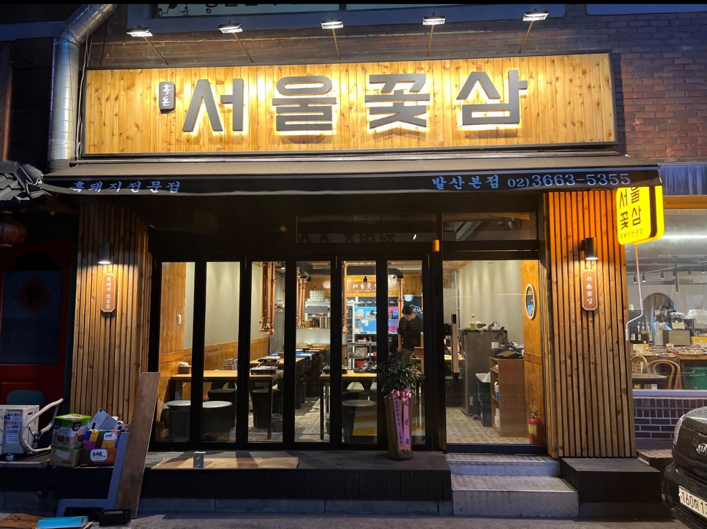

- 우당탕탕 하루일기
- 쩝쩝박사 리뷰
- 우당탕탕 오공완
쩝쩝박사 리뷰

삼겹살 맛집 서울꽃삼 발산본점
예약없이 먹기 힘든 곳..! 테이블링 어플 이용하면 원격으루 웨이팅 설 수 있다!
듀록 흑돼지 삼겹살이라 진짜 넘넘 맛있따. 직접 하나하나 다 구워주시는 것도 편하고 그래서 더 자주 오게되는 곳인 것 같다
입맛 까다로운 울 아빠도 맛있는 곳이라고 인정한 곳이다.. 여기오면 볶음밥은 꼭 먹어야한다 ㅎ 전에는 볶음밥 시키면 직접 자리에서 볶아주시며
불쇼도 해주셨었는데, 지금은 자리의 화구? 버너? 가 바뀐 뒤로는 주방에서 볶아서 주신다. 볶아주시는 직원분들 마다
각자 토끼, 하트 등 모양도 내주시고 불쇼도 해주셔서 보는 맛이 있었는데.. 조금 아쉽긴하당
다른 지점은 어떤지 모르겠지만 갈치 속젓 + 다양하게 주시는 소스들 + 명란 올려서 김과 싸먹는 고기의 맛이 진짜 일품이다
발산에서 삼겹살 맛집 찾는다면 꼭 가볼만한 곳 ㅎㅎ 왕추천추천